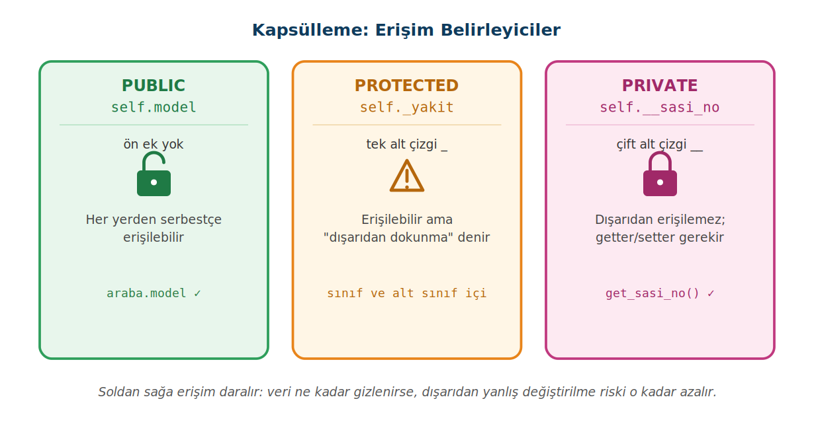

Çok Biçimlilik, Kapsülleme ve Soyutlama
Nesne tabanlı programlamanın dört temel ilkesinden kalıtımı 10. haftada gördük. Bu sayfa kalan üçünü anlatır: aynı komutun farklı nesnelerde farklı çalışması, bir nesnenin verisini dış dünyadan koruma ve gereksiz ayrıntıları gizleyip yalnızca iskeleti ortaya koyma.
Bu sayfada
1Bu konuda ne var?
Sınıf nesneler için bir kalıptır; __init__ nesne oluşturulurken verisini yerleştirir, self o nesnenin kendisidir (6. hafta). Kalıtımda alt sınıf, ana sınıfın özelliklerini ve metotlarını devralır; override ise alt sınıfın devraldığı bir metodu aynı adla kendine göre yeniden yazmasıdır (10. hafta).
Nesne tabanlı programlamanın dört temel ilkesinden birini, kalıtımı, 10. haftada gördük. 11. haftada kalan üçünü işliyoruz. Bunlar birbirinden bağımsız konular değil; üçü de aynı amaca hizmet eder: gerçek dünyayı daha sadık modellemek ve büyük projelerde kodu yönetilebilir tutmak.
Çok biçimlilik aynı komutun farklı nesnelerde farklı çalışmasını, kapsülleme bir nesnenin verisini dış dünyadan koruyup yalnızca izin verilen yollarla erişilmesini, soyutlama ise gereksiz ayrıntıları gizleyip yalnızca gerekli iskeleti ortaya koymayı sağlar.
2Çok biçimlilik (polymorphism)
10. haftada override'ı Arac ve Araba sınıfları üzerinde görmüştük: Araba, Arac'tan devraldığı ses_cikar metodunu kendine göre yeniden yazıyordu. Çok biçimlilik, bu fikrin doğal sonucudur: aynı isimli bir metot, hangi nesne üzerinde çağrıldığına göre farklı davranır. "Polimorfizm" kelimesi zaten "çok biçim" demektir.
class Hayvan:
def ses_cikar(self):
print("Hayvan bir ses çıkarıyor.")
class Kedi(Hayvan):
def ses_cikar(self):
print("Miyav!")
class Kopek(Hayvan):
def ses_cikar(self):
print("Hav!")
2.1 Tek fonksiyon, çok tür
Çok biçimliliğin asıl değeri, aynı kodun farklı türlerle çalışabilmesidir. Aşağıdaki seslendir fonksiyonu, kendisine gelen nesnenin hangi sınıftan olduğunu bilmek zorunda değildir; yalnızca ses_cikar metodunu çağırır. Nesne kediyse miyavlar, köpekse havlar:
def seslendir(hayvan):
hayvan.ses_cikar()
hayvanlar = [Kedi(), Kopek(), Kedi()]
for h in hayvanlar:
seslendir(h)
Miyav! Hav! Miyav!
Burada seslendir fonksiyonu içinde tek bir if bile yok. Yeni bir hayvan türü (örneğin Kus) eklemek isterseniz, bu fonksiyona dokunmanıza gerek kalmaz; yeni sınıf kendi ses_cikar'ını getirir, fonksiyon onu da olduğu gibi çalıştırır. İşte çok biçimlilik kodu bu yüzden esnek ve genişletilebilir kılar: yeni türler eklemek, var olan kodu değiştirmeyi gerektirmez.
3Kapsülleme (encapsulation)
Bir banka hesabı nesnesi düşünün. Bakiyenin dışarıdan, hiçbir kontrol olmadan, hesap.bakiye = -5000 gibi doğrudan değiştirilebilmesi tehlikelidir. Oysa para çekme işleminin "yeterli bakiye var mı?" kontrolünden geçmesini isteriz. Kapsülleme, tam da bunu sağlar: bir nesnenin verisini dış dünyadan gizler ve ona yalnızca belirlenen metotlar üzerinden erişilmesine izin verir.
Bir ATM'de hesabınıza erişir, bakiye görür, para çeker veya yatırırsınız. Ama arka planda kimlik doğrulama, yetki kontrolü, bakiye güncelleme gibi pek çok işlem döner ve siz bunlarla doğrudan ilgilenmezsiniz. ATM size yalnızca gerekli düğmeleri sunar, geri kalan her şeyi gizler. Hem güvenlik sağlanır hem de kullanım basitleşir.
3.1 Üç erişim düzeyi
Python'da kapsülleme, özelliklerin önüne konan alt çizgilerle ifade edilir. Üç düzey vardır:

Public (genel): Python'da bir özellik varsayılan olarak public'tir; önüne hiçbir ek konmaz, sınıfın dışından serbestçe erişilebilir. Protected (korumalı): önüne tek alt çizgi konur; teknik olarak dışarıdan erişilebilir, ama bu adlandırma "bu özelliğe dışarıdan dokunma, yalnızca sınıf ve alt sınıflar içinde kullan" anlamına gelen bir uyarıdır. Private (özel): önüne çift alt çizgi konur; bu özelliğe sınıfın dışından doğrudan erişilemez.
class Araba:
def __init__(self, model):
self.model = model # public
self._yakit = "Benzin" # protected
self.__sasi_no = "ABC123" # private
araba = Araba("Toyota")
print(araba.model) # Toyota (erişim serbest)
print(araba._yakit) # erişilebilir ama önerilmez
print(araba.__sasi_no) # ❌ AttributeError
Protected ile private'ı karıştırmayın. Tek alt çizgi (_) yalnızca bir uyarıdır, erişimi gerçekten engellemez; erişimi fiilen kısıtlayan çift alt çizgidir (__). Yine de private tam bir kilit değildir: Python bunu name mangling denen bir yeniden adlandırmayla yapar ve özelliğe araba._Araba__sasi_no yazımıyla hâlâ erişilebilir. Yani çift alt çizgi, engelden çok güçlü bir uyarıdır.
3.2 Getter ve setter: kontrollü erişim
Private bir özelliğe erişmek tamamen yasak değildir; sadece kontrollü olması gerekir. Bunun için sınıfın içinde, o özelliği okuyan bir getter ve değiştiren bir setter metodu yazarız. Böylece her erişim bizim koyduğumuz kuralın içinden geçer:
class Araba:
def __init__(self, sasi_no):
self.__sasi_no = sasi_no
def get_sasi_no(self): # getter: okur
return self.__sasi_no
def set_sasi_no(self, yeni): # setter: değiştirir
self.__sasi_no = yeni
araba = Araba("ABC123")
print(araba.get_sasi_no()) # ABC123 (getter ile okuduk)
araba.set_sasi_no("XYZ999") # setter ile değiştirdik
print(araba.get_sasi_no()) # XYZ999
Bu yaklaşımın değeri, setter içine kontrol koyabilmenizdir. Örneğin bir bakiye setter'ında "negatif değer kabul etme" kuralını yazabilir, böylece nesnenin verisinin her zaman geçerli kalmasını garanti edebilirsiniz. Python'da bu işin daha yaygın yolu @property kullanmaktır; bu dersin kapsamı dışında kaldığı için burada getter/setter metotlarıyla ilerliyoruz.
4Soyutlama (abstraction)
Soyutlama, bir nesnenin yalnızca gerekli olan kısmını ortaya koyup gereksiz ayrıntıları gizlemektir. Büyük projelerde, "her şeklin bir alanı vardır" gibi ortak bir kuralı önce bir iskele olarak tanımlar, ayrıntıları sonra her sınıfa bırakırız.
Python'da soyutlama, soyut sınıflar ve soyut metotlar ile yapılır. Bunun için abc (Abstract Base Classes) modülündeki ABC sınıfı ve @abstractmethod dekoratörü kullanılır. Soyut bir metot, yalnızca ismi belirtilmiş, içi boş bir metottur; ondan türeyen sınıfların bu metodu mutlaka kendine göre tanımlaması gerekir.
from abc import ABC, abstractmethod
class Sekil(ABC):
@abstractmethod
def alan_hesapla(self):
pass # içi boş: kuralı koyar, uygulamayı alt sınıfa bırakır
class Dikdortgen(Sekil):
def __init__(self, genislik, yukseklik):
self.genislik = genislik
self.yukseklik = yukseklik
def alan_hesapla(self):
return self.genislik * self.yukseklik
class Daire(Sekil):
def __init__(self, yaricap):
self.yaricap = yaricap
def alan_hesapla(self):
return 3.14 * self.yaricap ** 2
print("Dikdörtgen alanı:", Dikdortgen(4, 5).alan_hesapla()) # 20
print("Daire alanı:", Daire(3).alan_hesapla()) # 28.26
4.1 Soyut sınıftan nesne oluşturulamaz
Soyut sınıfın amacı, doğrudan kullanılmak değil, bir kalıp dayatmaktır. Bu yüzden Sekil sınıfından doğrudan nesne oluşturmaya çalışırsanız Python izin vermez:
s = Sekil() # ❌ TypeError: Can't instantiate abstract class Sekil # without an implementation for abstract method 'alan_hesapla'
Bu, soyutlamanın getirdiği güvencedir: Sekil'den türeyen her sınıf alan_hesapla'yı tanımlamak zorundadır; tanımlamazsa o sınıftan da nesne oluşturulamaz. Böylece "her şeklin bir alan hesabı olmalı" kuralı koda gömülmüş olur.
5Kendin yaz
Aşağıdaki görevleri önce kendiniz yazmaya çalışın; takıldığınızda çözümü açın. Görevler kolaydan zora doğru sıralanmıştır.
Görev 1: Şekillerin alanı
alan() metodu olan Dikdortgen (en, boy) ve Ucgen (taban, yükseklik) sınıfları yazın. Üç şekli bir listeye koyup tek döngüde her birinin alan() metodunu çağırarak alanlarını yazdırın; döngü şeklin hangi sınıftan olduğunu bilmek zorunda kalmasın.
20 9.0 18
Çözümü göster
class Dikdortgen:
def __init__(self, en, boy):
self.en = en
self.boy = boy
def alan(self):
return self.en * self.boy
class Ucgen:
def __init__(self, taban, yukseklik):
self.taban = taban
self.yukseklik = yukseklik
def alan(self):
return self.taban * self.yukseklik / 2
for sekil in [Dikdortgen(4, 5), Ucgen(6, 3), Dikdortgen(2, 9)]:
print(sekil.alan())
Görev 2: Korunan not
Notu private (__notu) tutan bir Ogrenci sınıfı yazın. set_not(yeni) yalnızca 0 ile 100 arasındaki değeri kabul etsin, aksi hâlde Geçersiz not: 120 yazsın; get_not() notu döndürsün. Mehmet'in notunu 85 yapın, sonra 120 vermeyi deneyin ve son notu yazdırın.
Geçersiz not: 120 Mehmet 85
Çözümü göster
class Ogrenci:
def __init__(self, ad):
self.ad = ad
self.__notu = 0
def set_not(self, yeni):
if yeni >= 0 and yeni <= 100:
self.__notu = yeni
else:
print("Geçersiz not:", yeni)
def get_not(self):
return self.__notu
o = Ogrenci("Mehmet")
o.set_not(85)
o.set_not(120)
print(o.ad, o.get_not())
Görev 3: Rapor türleri
abc modülüyle soyut bir Rapor sınıfı yazın; olustur(notlar) soyut metot olsun. KisaRapor yalnızca ortalamayı, DetayliRapor her öğrencinin notunu ve en sonda ortalamayı yazsın. Aynı {"Ali": 70, "Ayşe": 90, "Zeynep": 80} verisini iki rapora da verip tek döngüyle çalıştırın. Projede aynı veriyi farklı biçimlerde göstermek için bu yapıyı kullanabilirsiniz.
Ortalama: 80.0 ------------ Ali 70 Ayşe 90 Zeynep 80 Ortalama: 80.0 ------------
Çözümü göster
from abc import ABC, abstractmethod
class Rapor(ABC):
@abstractmethod
def olustur(self, notlar):
pass
class KisaRapor(Rapor):
def olustur(self, notlar):
print("Ortalama:", sum(notlar.values()) / len(notlar))
class DetayliRapor(Rapor):
def olustur(self, notlar):
for ad, puan in notlar.items():
print(ad, puan)
print("Ortalama:", sum(notlar.values()) / len(notlar))
notlar = {"Ali": 70, "Ayşe": 90, "Zeynep": 80}
for rapor in [KisaRapor(), DetayliRapor()]:
rapor.olustur(notlar)
print("-" * 12)
6Konu sonu testi
Aşağıdaki beş soruyu kendiniz çözün. Her sorunun altındaki Cevabı göster satırına tıklayınca doğru cevap ve açıklaması açılır.
-
Çok biçimlilik (polimorfizm) ne anlama gelir?
- A) Bir sınıfın birden çok ana sınıftan miras alması
- B) Bir nesnenin birden çok kopyasının olması
- C) Aynı isimli bir metodun farklı sınıflarda farklı davranması
- D) Private özelliklerin gizlenmesi
- E) Soyut sınıf oluşturma
Cevabı göster
CÇok biçimlilik, aynı isimli metodun farklı sınıflarda farklı davranmasıdır. -
Python'da bir özelliği private yapmak için önüne ne konur?
- A) Hiçbir şey
- B) Tek alt çizgi
_ - C)
privateanahtar kelimesi - D) Çift alt çizgi
__ - E) Yıldız
*
Cevabı göster
DPrivate özellik, önüne çift alt çizgi (__) konarak tanımlanır. -
Bir private özelliğe sınıf dışından güvenli erişim için ne kullanılır?
- A)
global - B) getter / setter metotları
- C)
super() - D)
@abstractmethod - E)
__str__
Cevabı göster
BPrivate özelliğe kontrollü erişim, getter ve setter metotlarıyla sağlanır. - A)
-
Aşağıdaki kod neden hata verir?
soru4.pyfrom abc import ABC, abstractmethod class Sekil(ABC): @abstractmethod def alan(self): pass s = Sekil()- A)
abcmodülü içe aktarılmadı - B)
alanmetodu yanlış yazılmış - C)
@abstractmethodgereksizdir - D) Hata oluşmaz
- E)
Sekilsoyut bir sınıftır; doğrudan nesne oluşturulamaz
Cevabı göster
E@abstractmethodiçeren soyut sınıftan doğrudan nesne oluşturulamaz;TypeErrorverir. - A)
-
Aşağıdaki kodun çıktısı nedir?
soru5.pyclass Araba: def __init__(self): self.__hiz = 120 def hiz_goster(self): return self.__hiz a = Araba() print(a.hiz_goster())- A)
120 - B)
AttributeError - C)
__hiz - D)
None - E)
0
Cevabı göster
Ahiz_goster, sınıfın içinden private__hiz'e erişebilir; çıktı120'dir. Hata yalnızca sınıf dışından doğrudan erişimde oluşur. - A)
Çok biçimlilik yeni türler eklemeyi kolaylaştırır: ortak metot adı aynı kaldığı sürece var olan kodu değiştirmeniz gerekmez. Kapsülleme veriyi kontrollü kapıların arkasına alır. Soyutlama ise alt sınıflara uyulması zorunlu bir iskelet dayatır.
7Kendi başına dene
Aşağıdaki soruları kendi başınıza çözün; çözümleri verilmemiştir.
- Bir
Hayvanana sınıfı ve ondan türeyenKus,Baliksınıfları yazınız; her birindehareket_etmetodu farklı bir mesaj yazsın (uçar / yüzer). Bir fonksiyonla ikisinin de hareketini gösteriniz. - Bir
Sicakliksınıfı yazınız;__dereceözelliğini private tutsun. Bir setter yazınız; girilen değer −273'ten küçükse (mutlak sıfırın altı) reddetsin, aksi halde güncellesin. - Bir
Urunsınıfı yazınız;__fiyatprivate olsun. Bir setter ile fiyatı güncellerken negatif değeri reddediniz; bir getter ile fiyatı okuyunuz. Ayrıca__str__ekleyerekprint(urun)çağrısında ürünün adını ve fiyatını okunaklı gösteriniz.
Sınıflar dizisinin dördüncü ve son konusu. Önceki: Kalıtım, super() ve override (10. hafta). 11. haftadaki çok biçimlilik, oradaki override'ın doğal devamıdır.